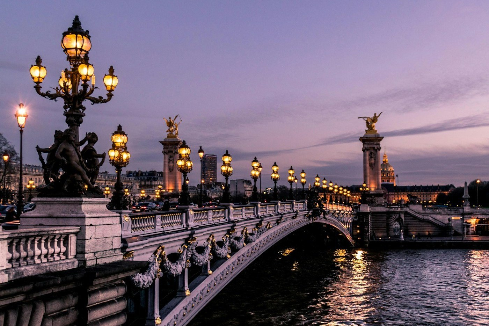

| Главная | Архитектура | Культура | Язык | Прогулка | Галерея | |
| Анкета | DOM | Кириллица / латиница | Задача 1009 | Таблица памятников | ЮНЕСКО: берега Сены |
Картины, книги и фильмы открывают разные Франции. Повседневные привычки связывают эти большие истории с личным опытом.
Искусство | Повседневность | Музеи
Живопись
Поймать впечатлениеИмпрессионисты исследовали свет, цвет и изменчивость видимого мира. Клод Моне писал один мотив при разном освещении; Эдгар Дега часто обращался к движению и сценам современной жизни. Смотри: цветные тени, заметный мазок, ощущение мгновения. |
Литература
Город как геройУ Виктора Гюго Париж становится пространством истории и социальных конфликтов. В романе «Собор Парижской Богоматери» архитектура тесно связана с судьбами персонажей. Читай: как описание места меняет настроение сцены. |
Кино
Выйти на улицуФранцузская «новая волна» конца 1950-х и 1960-х связана с экспериментами в монтаже, съёмками на натуре и авторским взглядом. Среди её режиссёров — Франсуа Трюффо и Жан-Люк Годар. Сравни: как выглядит город в постановочной сцене и в уличной съёмке. |
|
 |
Трапеза как общениеВ 2010 году ЮНЕСКО включила «гастрономическую трапезу французов» в список нематериального культурного наследия. Речь идёт о социальной практике: совместном праздновании, выборе блюд, сервировке и общении. Это не означает, что любое французское блюдо само по себе является объектом ЮНЕСКО.
|
Лувр вырос из дворцового комплекса; музей Орсе расположен в здании бывшего вокзала. Поэтому история музейного здания сама становится частью посещения.